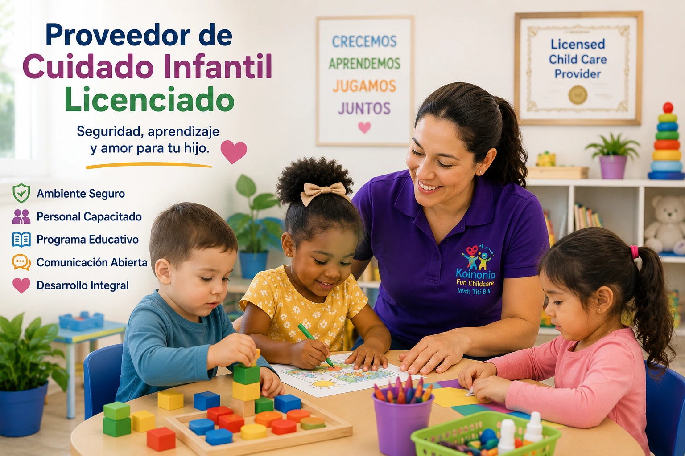

Qué Buscar en un Proveedor de Cuidado Infantil Licenciado
Elegir un proveedor de cuidado infantil es una de las decisiones más importantes para cualquier familia. Un programa licenciado ofrece tranquilidad adicional porque cumple con requisitos establecidos para proteger la seguridad, salud y bienestar de los niños. Sin embargo, además de la licencia, existen otros aspectos que vale la pena evaluar antes de tomar una decisión.

1. Verifica que el programa esté licenciado
La licencia demuestra que el proveedor cumple con regulaciones establecidas por el estado. Esto generalmente incluye requisitos de seguridad, capacitación, supervisión y calidad del entorno donde los niños reciben cuidado.
2. Observa la limpieza y organización
Un ambiente limpio, ordenado y bien mantenido refleja atención a los detalles y compromiso con la salud de los niños. Durante una visita, observa las áreas de juego, baños, materiales educativos y espacios de descanso.
3. Evalúa la interacción con los niños
Los cuidadores deben mostrar paciencia, respeto, cariño y atención. Observa cómo hablan con los niños, cómo responden a sus necesidades y cómo fomentan el aprendizaje y la participación.
4. Pregunta sobre la capacitación del personal
La formación continua ayuda a los proveedores a mantenerse actualizados en temas relacionados con seguridad infantil, primeros auxilios, desarrollo temprano y mejores prácticas educativas.
5. Revisa los protocolos de seguridad
Un programa de calidad debe contar con procedimientos claros para emergencias, control de acceso, entrega y recogida de niños, manejo de medicamentos y prevención de accidentes.
6. Conoce el programa educativo
Las mejores experiencias de cuidado infantil combinan aprendizaje y juego. Pregunta sobre las actividades diarias, el desarrollo de habilidades sociales, el lenguaje, la creatividad y la motricidad.
7. Evalúa la comunicación con los padres
La comunicación abierta es fundamental. Los padres deben sentirse informados acerca de las actividades, progreso, alimentación y bienestar de sus hijos.
8. Busca referencias y reputación
Las opiniones de otras familias pueden proporcionar información valiosa sobre la experiencia general del programa. También es útil revisar redes sociales, testimonios y recomendaciones locales.
Reflexión Final
Un proveedor de cuidado infantil licenciado ofrece una base importante de confianza y seguridad. Sin embargo, la mejor decisión surge al combinar esa información con visitas, observación directa y una buena comunicación con el equipo educativo.
¿Buscas un programa licenciado en West Haven?
En Koinonia Fun Childcare ofrecemos un ambiente seguro, educativo y amoroso donde los niños pueden aprender, crecer y desarrollarse con confianza.